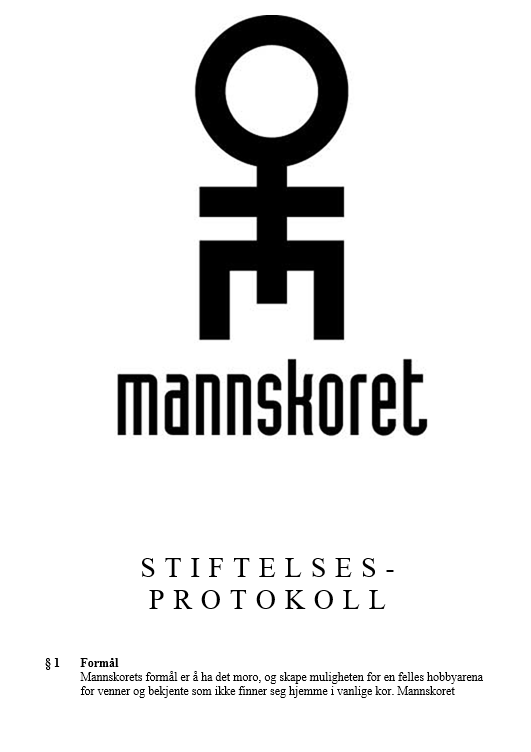

Sa Prepple, mange ganger, i bortimot 10 år. En sen høstkveld i 2002 ble ideen luftet enda en gang, for Espen Thoresen. «Jeg vet hvem som kan få fart i sakene», sa Espen. Dermed tok de turen ned til Hasse Lindmo, Espens kompis fra tida i P3. Det hjalp.
9. september kom invitasjonen fra Hasse, og uka etter, tirsdag 17. september 2002 kl 2000, møttes ti venner og venners venner på Vålerenga Bydelshus sammen med hun som ble korets første dirigent, Ann-Renate Synnes Aass, ennå ikke uteksaminert student fra Musikkhøgskolen.

Ann-Renate delte oss inn i fire stemmer og foreslo noen popsanger å begynne med, ettersom vi ville være et annerledes kor som skulle synge andre sanger enn de vanlige mannskorsangene. Alle forslagene hennes ble kontant avvist, og vi landet på en tradisjonell korsang, den vakre svenske folkevisa «Kristallen den fina». Noen kunne noter, noen kunne synge, noen kunne begge deler. Mange ingen av delene. Dette var dømt til suksess.
I månedene som fulgte kom nye venner til. Da vi tok sommerferie i 2003 var vi 22 mann. Vi hadde vært gjennom endeløse diskusjoner om både hva vi skulle hete, hva skulle ha på oss og hva vi skulle synge. Vi hadde også omsider forstått at dersom noen av oss skulle klare å ha et noenlunde velfungerende yrkesliv måtte vi legge utagerende mailutvekslinger i arbeidstida bak oss. Vi fikk vedtekter, styre og musikkutvalg. Om det hjalp? Tja.
Vi endte i hvert fall med å hete Mannskoret, kledd i sort dress og hvit skjorte. Vi fikk til og med en logo, rablet ned på baksida av noten til Poor Leno en sen tirsdagskveld på Kampen, til forveksling lik Einstürzende Neubaten sin, uten at noen merka det, aller minst designeren selv. Vi klarte å komme oss på Fredrik Skavlans «Først og sist» på TV der vi sang «London Calling» av Clash, strengt tatt litt før vi egentlig kunne den, og vi kom oss til Trondheim for å synge Røyksopps «Poor Leno» på Alarmprisen i Samfundet. Dette gikk veien! Kanskje en litt annen vei med litt mer virak enn Prepple så for seg. Men hyggelig var det, vi hadde da for faen et kor!
Formålsparagraf: Ha det artig og synge i hverandres begravelse

Mannskorets formålsparagraf har vært uendret siden vedtektene ble kloret ned våren 2003. Den sier at vi skal ha det morsomt sammen og at vi skal synge i hverandres begravelse. Paragrafen har også et forbehold om at vi skal ha det artig uten å ty til «korhumor», uten at begrepet er nærmere definert.
Formålet vårt kan framstå som noe enkelt og banalt, men for oss fungerer det godt som styringsverktøy. Det betyr at alt vi gjør skal ha som formål å ha det morsomt. Hvis vi for eksempel tar et oppdrag som kanskje ikke er det morsomste, så må det gi noe tilbake som kan bli til noe morsomt. For eksempel mye penger å dra på tur eller kjøpe øl for. Men samtidig – hvis den jobben øker sjansen for at folk blir lei og slutter og dermed ikke fortsetter i koret helt fram til sin egen begravelse, så skal vi ikke gjøre det. Ha det morsomt sammen, livet ut. Lett å styre etter.


Det første mannskoret med et annerledes repertoar
Vår første sang – «Kristallen den fina» – er stadig på repertoaret vårt. Damene liker den, og mange av oss liker damer, så det er en god match.
«Gutta» av Jokke var også tidlig med, og Jokke har fulgt oss siden, med både «Verdiløse menn», «Da har du driti deg ut igjen» og «Hvis jeg var deg». Rim, rytme og melodi i Jokkes sanger gjør de enkle å få til med kor. Vesentlig enklere enn for eksempel gitarriffene til Dead Kennedys. Andre norske helter som Raga Rockers («Fritt liv» og «Forbudte følelser»), The Aller Værste («Må ha deg»), DePress («Bo jo cie kohom») og DeLillos («Hjernen er alene») har også blitt faste innslag. Knutsen og Ludvigsens «Kanskje kommer kongen» er blitt en klassiker og en allsangsuksess. Ekstra stas har det vært å synge den sammen med Knutsen og Ludvigsen selv. Øystein Dolmen var med oss både på Parkteatret i januar 2019 og på jubileumskonserten i 2022.
Engelsk og amerikansk som The Clash, Billy Bragg, Frank Zappa og Ramones er også med. Svenskene er vanskelige å komme utenom, særlig Cornelis Vreeswijk. «Personliga Person» og «Somliga går i trasiga skor» er sanger vi er blitt glade i. Bellmans dystre «Märk hur vår skugga», som Imperiet hadde en hit med, er også blitt fast inventar.
Etter hvert dukker flere slike kor opp, men vi var først. Ingen sang Jokke og Zappa og Jokke før oss.